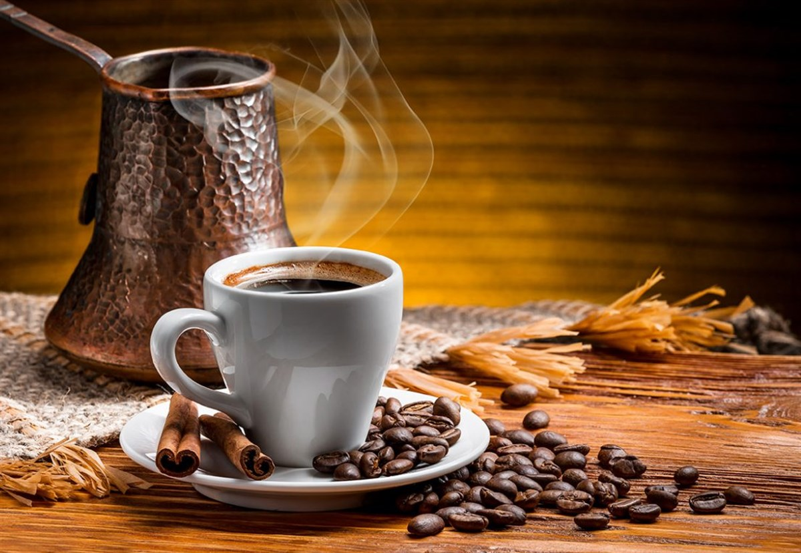

1543 yılında Yemen Valisi Özdemir Paşa, lezzetine hayran kaldığı kahveyi İstanbul'a getirdi. Türkler tarafından bulunan yepyeni hazırlama metodu sayesinde kahve, güğüm ve cezvelerde pişirilerek Türk Kahvesi adını aldı.Türk Kahvesi, Türkler tarafından keşfedilen kahve hazırlama ve pişirme metodunun adıdır. Özel bir tadı, köpüğü, kokusu, pişirilişi, ikramı... kısacası, kendine özgü bir kimliği ve geleneği vardır.
TÜRK KAHVESİ YAPIMI
Şekerli tatları sevenlerin gözde kahvesi olan Mochanın İtalya'nın Torino kentine özgü bicerin isimli kahveden ilham aldığı düşünülür. Bicerin; espresso, sıcak çikolata ve yoğun süt köpüğü ile hazırlanan ve cam bardaklarda servis edilen geleneksel bir kahvedir.
Mocha Kahvesi
Cappuccino, İtalya’dan dünyaya yayılan bir kahve pişirme tekniği ve bu tekniğin kahveye verdiği isimdir. Cappuccino, bol süt köpüğü ile espressonun buluşması sonrası ortaya çıkan, içimi oldukça yumuşak bir çeşit kahvedir. Bu kahve, yapılış bakımından İtalya’da bulunmuş ama şehirde değil, bir manastırda ortaya çıkmıştır.Adını aldığı manastırda pişiriliş açısından pek çok kahveden farklı olarak ortaya çıkan Kapuçino, daha sonrasında bu tekniğin yayılması, pekiştirilmesi ve farklı kahve türevlerinde kullanılması ile süt köpüğü anlamında öncü kahvelerden biridir.
Filtre kahve çekirdeğinin ince şekilde öğütülmüş halidir. Sıcak suyla buluştuğunda fincanlarda iştah açan bir kahve kokusu oluşmaktadır. Filtre kahve, köpüksüz ve siyah renktedir. Tadı Türk kahvesine göre bir miktar daha serttir.